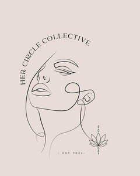

Trade Mark Journal No.2025/027 4 July 2025
UK00004219733 16 June 2025 (9,16,35,36,41,43,44,45)

- Class 9
- Ebook's; downloadable podcasts; digital notebooks; downloadable educational course materials; digital organisers; monthly planners; weekly planners; daily planners; digital tickets for events; personal development ebooks.
- Class 16
- Personal development journals; blank writing journals; motivational occasion cards; personal organisers; certificates and awards for events; printed stationery for personal and business use; Event materials namely workbooks, sheets, programmes or itineraries.
- Class 35
- Promotion of business networking events; online marketing; event planning and coordination; providing business support for female entrepreneurs; promotion and organisation of branded events; brand partnerships; promotional campaigns; business online marketing; marketing the goods and services of others; promotion of goods through sponsorship; charitable fundraising events; arranging and conducting of promotional events; business promotion; development of promotiona l campaigns; promotion [advertising] of travel; advertising and marketing of events; business planning services; providing business management start-up support for other businesses; promotion of goods and services through sponsorship and influencers; providing business information; via a web site; ticket reservation and booking services for entertainment events; promoting collaborations with brands; Provision of business networking opportunities online and offline; organising and hosting business networking events; arranging and conducting networking events for business; o rganising and managing community groups for women; .
- Class 36
- Arranging grants , sponsorships and funding support for women-owned projects and start- ups; budgeting support; organising donations; sponsorships for community based events; Personal financial services; Provision of budgeting and financial guidance; Charitable fund raising services.
- Class 41
- Organising community team building events; organising motivational speaking events; hosting educational workshops; hosting professional development events; organising and hosting life skills events; hosting personal fitness events; conducting workshops and seminars in personal awareness, professional development and personal growth; conducting educational workshops relating to parent community; arranging and conducting of workshops and seminars in self-awareness; conducting workshops and seminars in personal awareness; organising awards events; ticketing and event booking services; ticket reservation services for concerts; organising live events and panel talks; organising community gatherings ; publishing workbooks for personal development; hosting holistic wellness events; hosting emotional wellbeing workshops; emotiona l wellbeing workshop; hosting workshops for mental health awareness for undeserved groups; organising beauty and wellness events focused on empowering women; Provision of personal financial workshops; Provision of physical activity classes; Organising and providing guest speakers; Organising multicultural events for entertainment purposes; Provision of entertainment services namely organising spa days; Provision of entertainment services namely organising wellness experiences being pop-up community engagement events; Provision of training in relation to identity development; organising and hosting entertainment events relating to spiritual development; Personal and social empowerment workshops; life coaching services; l ifestyle mentoring; .
- Class 43
- Provision of food and beverages; ar ranging and booking temporary accommodation.
- Class 44
- Mental health therapy services; health center services; mental health services; beauty care services provided by a health spa; Provision of alternative therapy services; Provision of dietary and nutritional advice; Provision of guided meditation sessions.
- Class 45
- Organising community circles focused on personal growth; relationship guidance; emotional support services for families; providing emotional and social support aimed at personal rebranding and identity transformation; Provision of peer support groups for women; Provision of emotional support services.
Davinya Johnson
Rhynelle Dunn